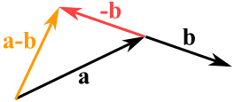

You may have heard of vectors before, maybe in math, or even games. Vectors are very important in both contexts. A

The
The
Pretty simple, right?
You can also add vectors, by drawing a line from the first vector's head to the second vector's tail.
Subtracting vectors is also possible by reversing the vector we want to subtract, and then adding the two vectors as usual.

Multiplying and dividing vectors, however, are a little more complicated.